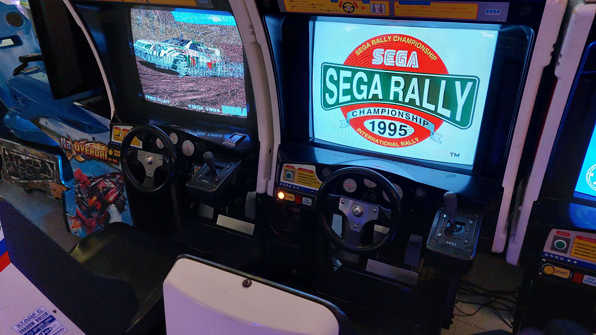
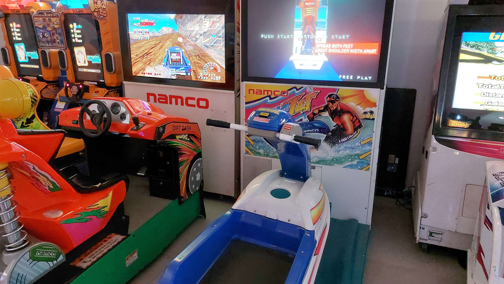
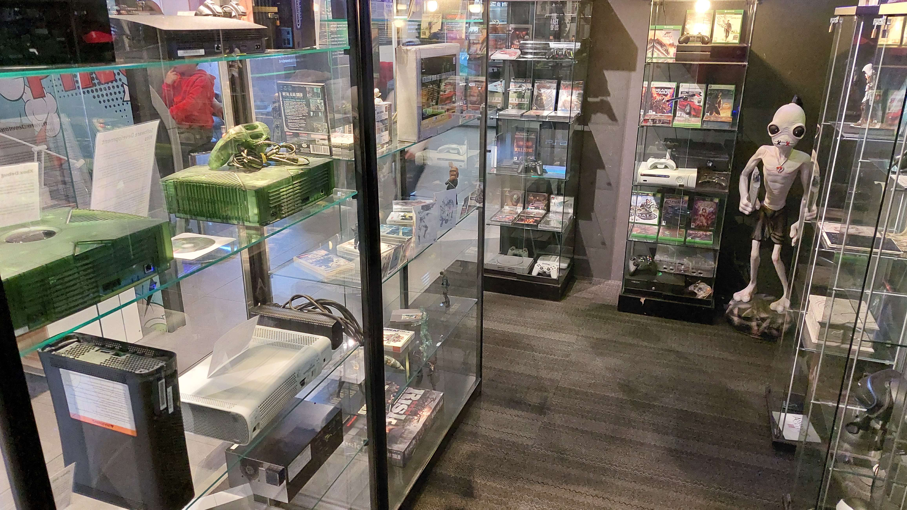

Opening hours
Mo: Closed
Tu: Closed
We: 10.00-12.00 | 12.00-14.00 | 14.00-16.00 | 16.00-18.00
Th: 10.00-12.00 | 12.00-14.00 | 14.00-16.00 | 16.00-18.00
Fr: 10.00-12.00 | 12.00-14.00 | 14.00-16.00 | 16.00-18.00 | 18.00-21.00
Sa: 10.00-12.00 | 12.00-14.00 | 14.00-16.00 | 16.00-18.00
Su: 12.00-14.00 | 14.00-16.00 | 16.00-18.00

Location
The museum is located in the middle of the Stadshart Zoetermeer passage, on the first floor at the top of the escalator. The V&D used to be located here.

Time slots
We are also open on Mondays and Tuesdays during the school holidays. Children under the age of 10 may only enter the museum under supervision. Tickets for children and companions are the same price. Check our ticket page for the rates.